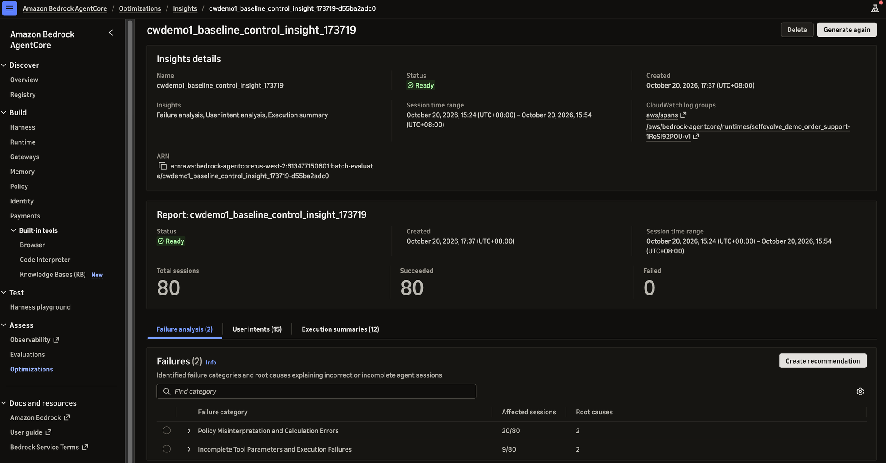
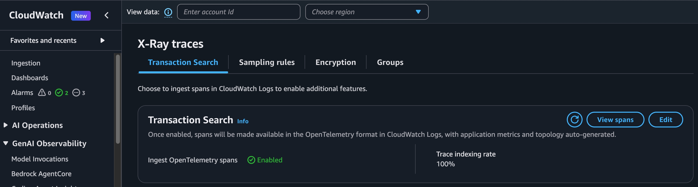
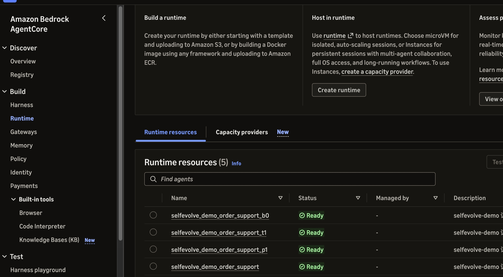
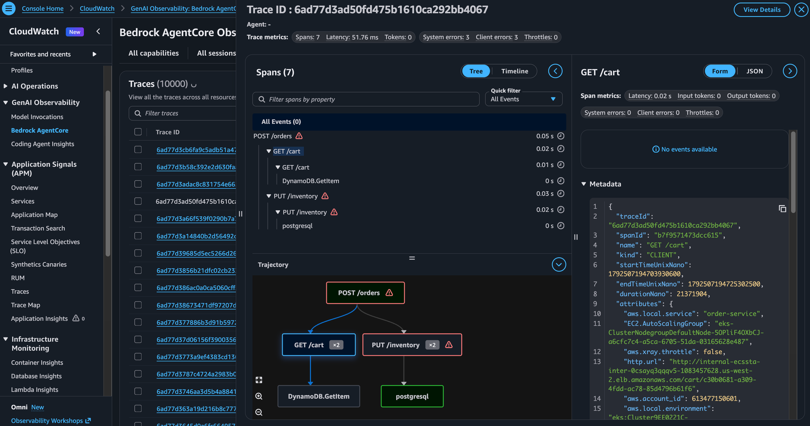
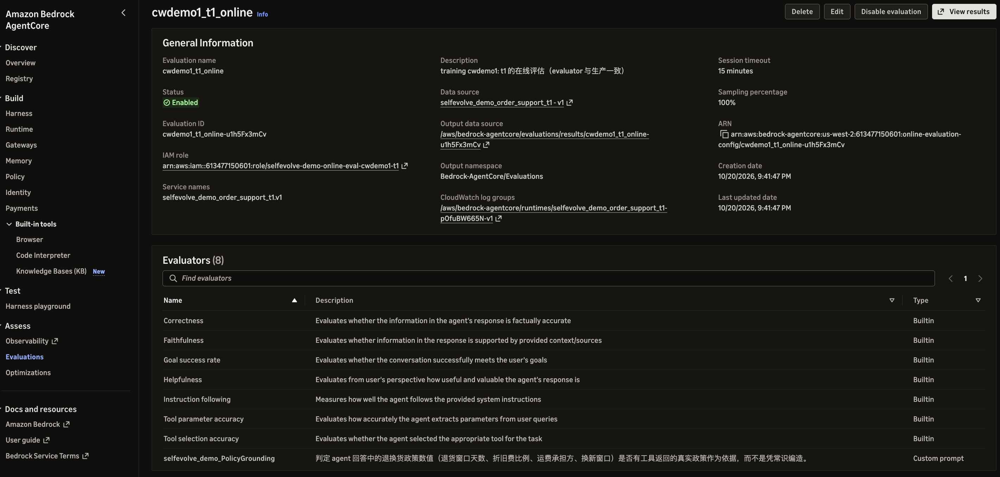
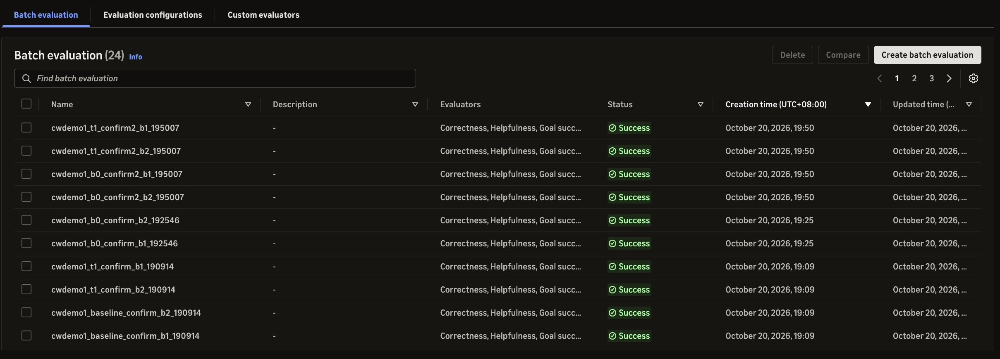
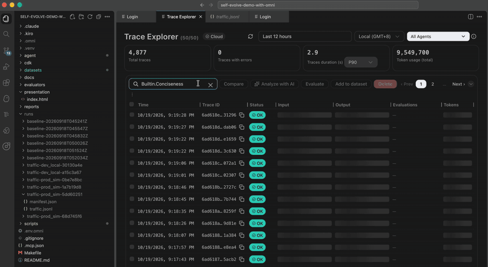
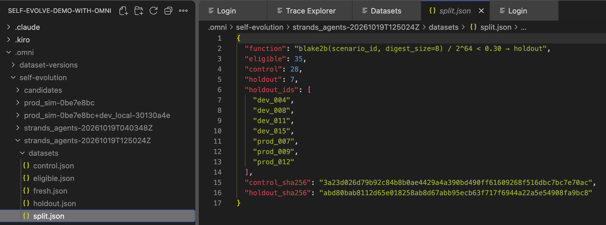

Agent 评估改进闭环：可观测性 → 数据集 → 评估 → 分类 → 改进 → 分阶段确认
两种做法：CloudWatch 标准版（AWS CLI）与 Omni 版（IDE + MCP）
 Demo · GitHub
Demo · GitHubgithub.com/yagrxu/self-evolve-demo-with-omni
一个电商售后 agent，HTTP 200、回答流畅，但结论是错的。没有可观测性看不到错在哪；没有评估不知道改了有没有用；没有门禁不知道改了会不会更糟。
logs put-resource-policy（授权 X-Ray 写 aws/spans）→ xray update-trace-segment-destination → 设置索引比例。1% 免费；做评估需要完整 trace 时用 100%，注意成本。
AgentCore CLI 部署时自动埋点；CDK + Direct Code Deploy 则在包里带 aws-opentelemetry-distro，entrypoint 用 opentelemetry-instrument agent.py。不改业务代码。
发 1 条请求，确认 invoke_agent / execute_tool / chat 三类 span 都落地（本例 13 个）。没开 Transaction Search 不会报错，只是后面全是 0 条。
AgentCore Runtime + endpoint + IAM role；tracingEnabled；固定「今天」等环境变量，让标准答案可复现。
自定义 LLM-as-judge evaluator + Online Evaluation Config（线上流量 100% 自动打分）。它就是 run 之前冻结的标尺。
用 get-evaluator 读真实值域（曾把 [0,1] 误记为 [0,6]）；生产里有没有 safety evaluator；在线评估只覆盖它配置的那个 runtime。
| 默认评估 · Online Evaluation（CDK eval stack） | 批量评估 · Batch Evaluation | |
|---|---|---|
| 何时打分 | 持续、自动；session 空闲 15 分钟后 | 按需，指定 session / 时间窗 |
| 标准答案 | 无 —— 只能判「看起来对不对」 | 有 —— 每个 session 注入 groundTruth |
| 覆盖范围 | 只覆盖它配置的那个 runtime（log group + serviceName） | 任意 runtime |
| 用途 | 生产监控 · 诊断来源 · S2 灰度的唯一评分 | 离线实验：S0 / S1 的配对比较 |
| 本次实测 | baseline 被覆盖 121 个 session；候选最初 0（CDK 只给 baseline 建了）→ 已改为候选 stack 同时部署默认评估 | 全部 S0 / S1 结论 |
// cdk/lib/eval-stack.ts —— baseline 与每个候选 stack 共用 new agentcore.OnlineEvaluationConfig(this, 'OnlineEval', { onlineEvaluationConfigName: `${runId}_${variant}_online`, dataSource: agentcore.DataSourceConfig.fromAgentRuntimeEndpoint(runtime, endpoint), evaluators: productionEvaluators(policyGrounding), // 质量 4 · 工具 2 · 会话 1 · 自定义 1 samplingPercentage: 100 }); npx cdk deploy selfevolve-demo-agent-t1 selfevolve-demo-eval-t1 # 同一次部署
| 组 | 从哪来 | 用来做什么 | 谁能看 / 何时看 | Omni run · CLI demo |
|---|---|---|---|---|
| eligible 合格池 | 生产 trace 里能对上标准答案的样本（有输入、有回答、有 scenario_id） | 只做盘点和切分的来源，不直接参与任何决策 | — | 35 · — |
| control | eligible 中稳定哈希 ≥ 30% 的部分 | 重复采样诊断 · 决定改哪一层 · 设计候选 · S0 配对比较 | 人和 agent 都可以反复看 | 28 · 20 |
| holdout | eligible 中稳定哈希 < 30% 的部分（与 control 同分布） | S1：只测领先的那一个候选，检验「换一批同类题还成立吗」 | 切分后封存；设计候选时不看 | 7 · 未切 |
| verify | 单独构建、订单区间与前三组不相交（本次 fresh / verify 集） | S1 最终确认 · 候选冻结后的新数据，抓过拟合 | 出结果前登记标准；只跑一次，不替换 | 20 · 20+20 |
blake2b(scenario_id) 落在最低 30% 进 holdout —— 重跑结果相同，不能「重摇到候选通过」。
按「比例 + 最少条数」双约束；本次 holdout 只有 7 条，确认集扩到 40 条才够 S1。不够就等流量，不降门槛。
每组注册为独立的 AgentCore Dataset 并打不可变版本；评估结论引用「dataset id + 版本」。
| 页签 | 回答的问题 | 本次（baseline × control，80 session） |
|---|---|---|
| Failure analysis | 哪里失败、为什么 | 政策理解与计算错误 20/80 · 工具参数与执行失败 9/80 |
| User intents | 用户在问什么 | 15 类：质量问题退货 8 · 退货问运费 8 · 部分退货 4 … |
| Execution summaries | agent 实际怎么做 | 12 条处理路径 |

start-batch-evaluation --insights Builtin.Insight.FailureAnalysis / UserIntent / ExecutionSummary · 不能与 evaluators 同批 · log group 必须含 aws/spans
大类 Policy Misinterpretation and Calculation Errors 20/80 ├ 子类 Logic Contradiction 12 │ ├ 根因 Eligibility Verification Before Tool Call 8 │ └ 根因 Return vs. Exchange Window Confusion 4 ├ 子类 Coupon Proration and Refund Calculation 5 └ 子类 Return Type Misclassification → Shipping 3 大类 Incomplete Tool Parameters / Execution Failures 9/80 # 每个 session：explanation · 出错的 span · 分类 · 证据 · 置信度 # prod_005 · span a29f33bc：已说明超出 30 天窗口，却说「仍可为您处理」 # 并调用 create_return_label · hall-misunderstand · 0.9
| 输出 | 给了什么 | 能直接用吗 |
|---|---|---|
fixType | 改哪一层 | 只作参考：27 个根因 26 个是 SYSTEM_PROMPT_FIX，连「券分摊算错」也是 |
recommendation | 方向性文字（「在 prompt 中加入分步计算流程…」） | 不能：只说改什么，没给改好的内容 |
| Create recommendation | 改写好的 prompt / 工具描述（start-recommendation） | 可作候选，须对照政策审核 |
AGENT_TOOL_TIER=enhanced，由工具直接返回资格与金额| trace 里看到的信号 | 层 | 本例 |
|---|---|---|
| 工具数据正确，结论矛盾 / 不完整 | Prompt | 破损全额退款只说「全额」不给金额 |
| 模型自己做日期 / 金额 / 规则计算并出错 | Tool（让工具直接返回结果） | 券分摊、折旧费基数 —— insight 会标成 SYSTEM_PROMPT_FIX，需人工复核 |
| 必须先做的步骤被跳过（尤其不可逆动作前） | Workflow | 没查政策就 create_return_label |
| 选错工具、参数错 | Tool 描述 / schema | ToolSelectionAccuracy 低 |
| 只影响一类任务，修它需要一大段专用步骤 | Skill | 只影响「部分退货」 |
| prompt 有明确指令、跨任务、重复仍违反 | Model | 先排除 prompt 根本没写清楚 |
候选部署为独立 runtime（独立 stack / role），与 baseline 只差一个文件或一个开关；CDK 模板 diff 只应出现这一处。
| 阶段 | 数据 | 样本 | 影响范围 | 回答的问题 | 门禁 |
|---|---|---|---|---|---|
| S0 | control | ≥20 题 × 多批 | 无 | 值得继续吗 | 非劣效（CI 下界 ≥ −边界） |
| S1 | confirm（未用于挑选） | ≥40 题 | 无 | 没见过的题上不更差 | 非劣效，边界更窄 |
| S2 | 云上灰度 + 在线评估 | ≥200 session | 部分用户 | 真的更好吗 | CI 下界 ≥ 0 · 成本按预算 · safety 零新增 |
| S3 | 全量 | 全部 | 全部 | 有无回退 | 持续监控 + 自动回滚 |
线上 baseline 的旧包缺少确认集的订单 → 出现 +0.435 的假提升。用当前代码重建对照 arm b0。
看到结果后的调整允许，但记录理由、时间、calibrated_after_results，结局单独标记。
门禁 PASS + CONFIRM=yes；保留上一版 prompts，一条命令回滚。
只用 AWS CLI v2（≥ 2.38）+ CDK + jq + python3 标准库
每一步一个脚本，可以交给 coding agent 执行、由人确认
| 步骤 | 关键 API | 本次 run cwdemo1 | 说明 |
|---|---|---|---|
| 开启可观测性 | logs put-resource-policy · xray update-trace-segment-destination | 只读核对（账号已开启） | 每个 account + region 一次 |
| 部署 + 默认评估 | cdk deploy：agent stack + eval stack | 3 个候选 stack | 每个候选同时部署自己的 Online Evaluation（evaluator 与生产一致） |
| 数据集 | create-dataset · create-dataset-version | 3 份 · 各 v1 | control / confirm / confirm2 |
| 跑流量 | invoke-agent-runtime | 440 次 | session id 编码 run / arm / scenario / 批次 |
| 批量评估 | start-batch-evaluation（groundTruth） | 22 次 | S0 / S1 的全部结论来源 |
| 失败分类 | start-batch-evaluation --insights | 1 次 | 决定改哪一层（再人工复核） |
| 自动推荐候选 | start-recommendation | 未用于本次候选 | 验证时试过：把计算规则写进 prompt、漏掉破损例外 → p1 人工撰写、t1 是工具开关 |
| 门禁 / 上线 | 09_gates.py（本地算术）· cdk deploy | S0 × 2 · S1 × 2 · 未上线 | 上线前还需 S2 + 人工确认 |

assets/cw-01-transaction-search.png
assets/cw-02-genai-agents.png
assets/cw-03-trace-detail.png
assets/cw-04-online-eval.png
assets/cw-05-batch-eval.pngassets/cw-06-insights.png# 字段是蛇形：scenario_id / turns[].input / expected_response aws bedrock-agentcore-control create-dataset \ --cli-input-json '{"datasetName":"cwdemo1_control", "schemaType":"AGENTCORE_EVALUATION_PREDEFINED_V1", "source":{"inlineExamples":{"examples":[{ "scenario_id":"prod_001", "turns":[{"input":"订单号 ORD-10101 …", "expected_response":"… 合计可退 143.10 元"}], "assertions":["合计退款金额必须为 143.10 元"], "expected_trajectory":["get_order","get_refund_policy"]}]}}}' aws bedrock-agentcore-control create-dataset-version --dataset-id $DID
aws bedrock-agentcore start-batch-evaluation --cli-input-json '{ "batchEvaluationName":"cwdemo1_baseline_b1", "evaluators":[{"evaluatorId":"Builtin.Correctness"}, …], "dataSourceConfig":{"cloudWatchLogs":{ "serviceNames":["selfevolve_demo_order_support.v1"], "logGroupNames":["aws/spans", ""], "filterConfig":{"sessionIds":[…],"timeRange":{…}}}}, "evaluationMetadata":{"sessionMetadata":[{ "sessionId":"cwt-cwdemo1-baseline-prod_001-b1", "groundTruth":{"inline":{ "turns":[{"expectedResponse":{…}}], "assertions":[…], "expectedTrajectory":{"toolNames":[…]}}}}]}}' # 逐 session 结果 → …/batch-evaluations/results/default
# 失败聚类 → 根因 → 受影响 session → fixType aws bedrock-agentcore start-batch-evaluation --cli-input-json '{ "insights":[{"insightId":"Builtin.Insight.FailureAnalysis"}, {"insightId":"Builtin.Insight.UserIntent"}, {"insightId":"Builtin.Insight.ExecutionSummary"}], "dataSourceConfig":{…同 05…}}' # 门禁：A/A → 登记（早于候选）→ 配对比较 python3 09_gates.py calibrate --a-batches 1 2 --b-batches 3 4 python3 09_gates.py register --stage S0 --set control python3 09_gates.py compare --stage S1 --cand t1 --base b0 \ --set confirm,confirm2 --batches 1 2
logGroupNames 必须包含 aws/spansBuiltin.Insight.*| Stack / Runtime | 角色 | 与生产 baseline 的唯一差别 | 批量评估（有标准答案） | 默认评估（Online） |
|---|---|---|---|---|
| selfevolve-demo-agent | 生产 baseline | — （2026-09 旧包 · prompt v1 · basic 工具） | control × 4 批 → S0 对照 | 生产 config · 121 session |
| …-agent-p1 | 候选 · Prompt 层 | 只换 prompts.json（追加两句） | control × 4 批 → S0 FAIL | 未配置 |
| …-agent-t1 | 候选 · Tool 层 | 只开 AGENT_TOOL_TIER=enhanced（工具直接算资格与金额） | control × 4 + confirm 40 题 × 2 → S0 / S1 | cwdemo1_t1_online （本次 CLI 补建） |
| …-agent-b0 | 对照 · 同包重建 | 无 —— 用当前代码 / 数据重新打包的 baseline | confirm 40 题 × 2 → S1 对照 | cwdemo1_b0_online （本次 CLI 补建） |
p1 vs baseline：Prompt · t1 vs b0：Tool · b0 vs baseline：只差打包（可做 A/A 确认无影响）
同一份 Dataset、同一组 session id，start-batch-evaluation 按 session 注入标准答案；逐 session 分数做配对 bootstrap。
真实流量没有标准答案：对照与候选各配一份 online evaluation（evaluator 照抄生产），按在线分数比较。
| 阶段 | 候选（只改一层） | 对照 | 质量 Δ（95% CI） | 结局 |
|---|---|---|---|---|
| S0 第 1 轮 | p1 · Prompt 追加两句 | baseline | −0.010（−0.111, +0.094） | FAIL：修好目标，却暴露心算错误 |
| S0 第 2 轮 | t1 · AGENT_TOOL_TIER=enhanced | baseline | +0.081（+0.001, +0.176） | 校准后 PASS |
| S1 第一次 | t1 | 线上旧包 | +0.435 | 作废：旧包缺确认集订单 |
| S1（40 题） | t1 | b0（同包重建） | +0.162（+0.083, +0.243） | 校准后 PASS · 待 S2 |
你是一个电商平台的售后客服助手。请友好、简洁地回答 用户关于退换货的问题，让用户满意。 + 先依据工具返回的订单和政策判定资格，只给一个结论， + 前后不得矛盾；超出退货窗口时直接说明不能退款，只提供 + 政策允许的换新或保修路径，不暗示例外。 + 可以退款时写出每件可退金额、原始运费是否退还及 + 退款合计（元）。 # 模型/工具/代码/数据不变，与 v1 只差这一处 # 结果：判断类修好；「写出金额」放大了心算错误
AGENT_TOOL_TIER=enhanced # CDK 模板只差这一行 # basic 原有 4 个：只返回原始字段，日期/金额靠模型算 get_order · get_refund_policy search_knowledge_base · create_return_label # enhanced 新增 3 个：确定性规则写进代码 + check_return_eligibility(order_id, reason) → 每件：可退 / 仅换新 / 不可退 + 依据条款 id + 替代方案 + calculate_refund(order_id, items_json) → 逐项：原价·券分摊·实付·折旧费·退款额·运费 + get_coupon_allocation(order_id) → 券在各商品间的分摊明细 # trace：get_order → check_return_eligibility → calculate_refund
说明：新工具和标准答案用的是同一套规则函数（agent/tools.py）。这正是 Tool 层修复的含义 —— 业务规则由代码执行、模型只负责解释；但也意味着它在这类「规则可写成代码」的问题上提升最大，判断与表达类问题仍要靠 Prompt。
# 先 discover_agent_traces_metadata 拿真实列名 SELECT attributes['session.id'], traceId, MIN("@timestamp") FROM "default" WHERE ("@timestamp" BETWEEN to_timestamp(1792328483) AND to_timestamp(1792414883) AND attributes['gen_ai.agent.name'] = 'Strands Agents') AND "@telemetry_type" = 'traces' GROUP BY 1, 2 # 坑：扁平列 "attributes.session.id" 永远为空 → 用 map 访问 # 坑：时间两端都用整数秒绑定；0 行先当查错，不当没流量
# 每个 arm：换 prompts.json → 重启 dev server manage_test_agent {action:"set_start_command", command:"OMNI_PROMPTS_OVERRIDE=c1/prompts.json \ opentelemetry-instrument python agent.py"} local_server {action:"start"} manage_test_agent {action:"invoke_agent", prompt, session_id} search_local_telemetry {operation:"get", traceIds} # → 核对 llm.prompt_template.version / hash，不符就丢弃 manage_evaluations {action:"run", evaluatorId, targets:[{input, output, expected, assertions}]} # 门禁：gates_register.py（A/A）→ se_gates.py --registered
执行：bash training/omni/scripts/run_step.sh 1…11，一次一步、跑完即停。实测：fresh 集正确合计金额 19/39 → 29/39；判官重评一次 Δ 就移动 ~0.027。




llm.prompt_template.version = order_support-v1
c3-restructure-grounded
OMNI_PROMPTS_OVERRIDE 切换search_agent_traces（SQL）manage_evaluations run；本地 SESSION 级只有 1 个有效观测AWS_REGION 启动；MCP 握手需要 token两者共用同一套方法：全层快照 · 多批次基线 · A/A 校准 · 事先登记 · 只改一层 · 分阶段收紧
前缀：docs.aws.amazon.com/bedrock-agentcore/latest/devguide/ · docs.aws.amazon.com/AmazonCloudWatch/latest/monitoring/
开 Transaction Search 并验证 span · 标准答案只来自规则 · 多批次 + A/A 测噪声
门禁事先登记、按阶段收紧 · 每轮只改一层、对照同包重建 · 上线前人确认
材料：training/cloudwatch（CLI 脚本 + demo 记录）· training/omni（MCP 版本）